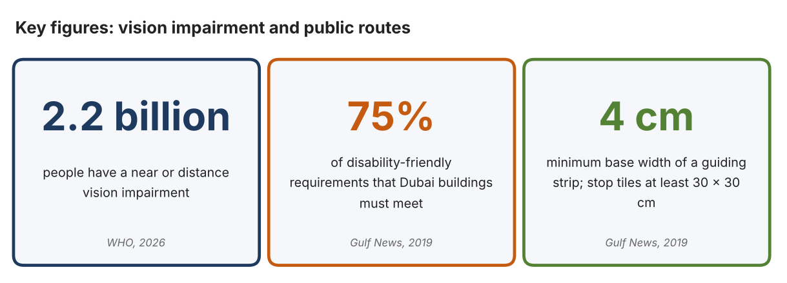
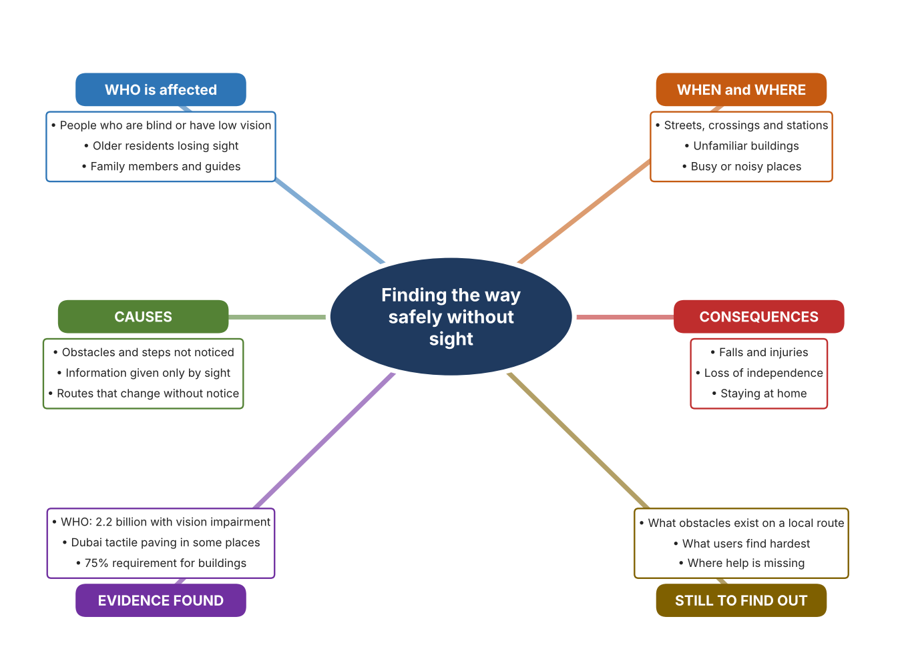
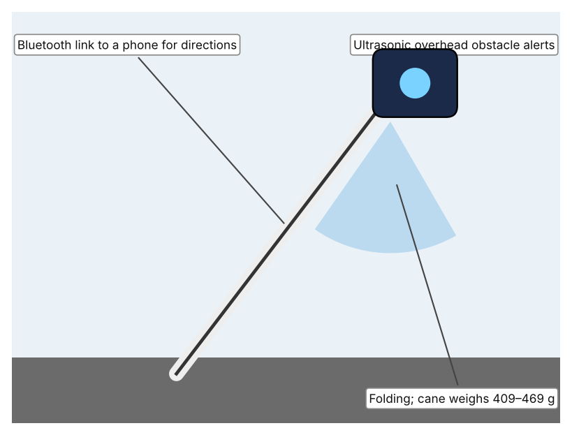
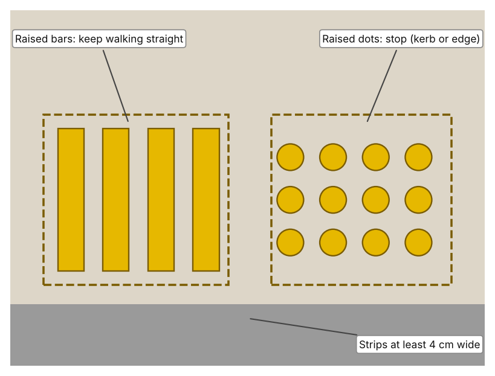
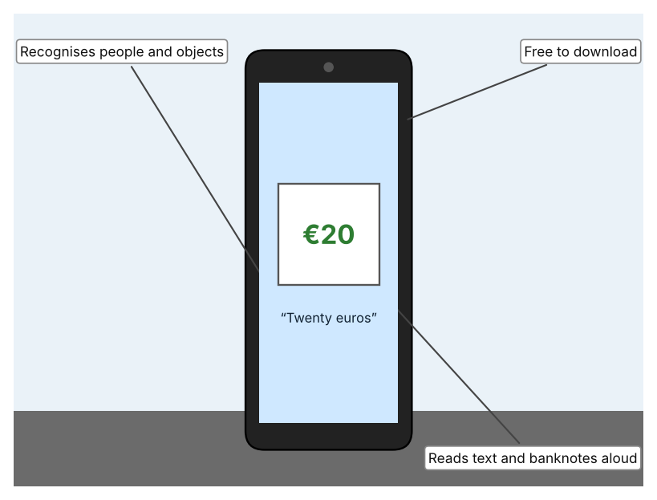

A1 · Design need
Identify and explain the problem faced by your client and community.
My client is the Community Inclusion Officer of a community centre in Dubai (a fictional client created for this task). The centre is used by people of all ages, including residents who are blind or have low vision. The officer has heard that some of these residents depend on family or friends to move around, and that others avoid unfamiliar places altogether. The client needs people with sight loss to be able to move around streets, buildings and public spaces safely and with as much independence as possible.
The people most affected are those who are blind or have low vision, whatever their age, including older residents whose sight is getting worse. Family members and friends are affected as well, because they are often the guides. Staff in shops, stations and public buildings are affected because they may not know how to help. The wider community is affected too, because a neighbourhood that excludes some people is poorer for everyone.
The need is supported by evidence. The World Health Organization reports that at least 2.2 billion people have a near or distance vision impairment, and notes that for older adults vision impairment can contribute to difficulty walking and a higher risk of falls and fractures (World Health Organization, “Blindness and Vision Impairment”). In Dubai, tactile paving with raised lines for walking straight and raised dots for stopping is found at Metro stations, Dubai Municipality centres and parts of Jumeirah, and buildings must meet 75% of disability-friendly requirements (Al Serkal). This tells me that some help exists but that it is not everywhere. The Gulf News article is from 2019, so I treat it as a guide to what was in place, not as today's complete picture.
Figure 1 summarises the key numbers. In my own words, the world is full of information that is delivered by sight alone, such as the edge of a platform, a sign or an approaching obstacle, and a person who cannot see it must find another way or take a risk. I still need to find out what a typical local route is like for such a person, and I will do that with an observation checklist and a short survey. Figure 2 is my mind map of the problem.
375 words


A2 · Research plan
Six research questions of different types, each with a priority, a research type and evidence.
| # | Question | Priority | Primary / secondary | Evidence | Brief answer |
|---|---|---|---|---|---|
| 1 | Factual: How many people have a vision impairment, and what risks does it bring? | High | Secondary | WHO fact sheet, 2026 (Appendix A, Source 1) | At least 2.2 billion people worldwide have a near or distance vision impairment; in older adults it can contribute to difficulty walking and a higher risk of falls and fractures. |
| 2 | Factual: What provision does Dubai make for people with sight loss in public places? | High | Secondary | Al Serkal, Gulf News, 2019 (Appendix A, Source 2) | Tactile paving at Metro stations, Dubai Municipality centres and parts of Jumeirah; buildings must meet 75% of disability-friendly requirements; guiding strips at least 4 cm wide and stop tiles at least 30 × 30 cm. |
| 3 | Conceptual: How does a person without sight learn where obstacles, edges and directions are? | Medium | Secondary | Sources 2, 3 and 4 | Without sight, information must come through touch (raised lines and dots, a cane), sound (spoken descriptions) or touch-based signals such as vibration; each has limits of range and detail. |
| 4 | Debatable: Should independence for people with sight loss be provided by the places they travel through, by something each person carries, or by other people? | Medium | Secondary | Appendix A, Sources 2, 3 and 4 | Built features help everyone but only where they are installed; carried tools go everywhere but cost money and need training; other people are flexible but not always there. My view: they work together. |
| 5 | Debatable (challenges my assumption, UAE source): Dubai already has tactile paving and access rules, so is moving around still a real problem? | High | Secondary | Al Serkal, Gulf News, 2019 (Appendix A, Source 2) | Paving is reported at Metro stations, municipality centres and parts of Jumeirah, which suggests it is not everywhere, and the rule requires 75% of requirements, not 100%. The article is old, so my own observation must show what exists near my community. |
| 6 | Factual (primary): What barriers exist on a local route used by the community, and how confident do people feel on it? | High | Primary | Own route checklist and survey (Appendix A, Sources 5 and 6) | [Student data needed: write the checklist counts and survey averages (with permission), then two sentences on the pattern you see.] |
A3 · Existing products
Three significantly different products, each analysed with ACCESS FM, with pros and cons.
Product 1: Smart cane (WeWALK Smart Cane 2 AI)

Illustration by the author based on “WeWALK Smart Cane 2 AI,” RNIB Shop (Appendix A, Source 3). [Student: replace with a photo from the source, cited MLA 9]
Product 2: Tactile paving in public places

Illustration by the author based on Al Serkal, “Have You Spotted These Metal Blocks in Dubai?” (Appendix A, Source 2). [Student: replace with a photo from the source, cited MLA 9]
Product 3: Phone app that speaks what the camera sees (Seeing AI)

Illustration by the author based on Trotman, “Seeing AI Can Now Tell People with Blindness Which Banknote They Are Holding” (Appendix A, Source 4). [Student: replace with a photo from the source, cited MLA 9]
ACCESS FM analysis
| ACCESS FM | Product 1 | Product 2 | Product 3 |
|---|---|---|---|
| Aesthetics | White folding cane with a smart handle; the page does not describe styling beyond that. | Raised bars and dots set into the paving; Gulf News does not state a colour. | An app with no physical form; the information is spoken. |
| Cost | £849 excluding VAT (£1,018.80 including VAT) at the RNIB shop. | Cost not stated; paid for by the authorities that install it. | Free to download (2017 article). |
| Customer | People with sight loss who already use a cane; the page says cane training is needed. | Any pedestrian with sight loss, wherever it is installed: Metro stations, municipality centres and parts of Jumeirah. | People with blindness who have a smartphone. |
| Environment | 620 mAh battery lasts 6–8 hours; uses Bluetooth to a phone. | Fixed outdoors in the pavement; needs no power. | Needs a charged phone with a working camera. |
| Size | Handle 184 g; cane 409–469 g; lengths 119, 137 or 149 cm; folds. | Guiding strips at least 4 cm wide at the base and 3 cm at the top; stop tiles at least 30 × 30 cm. | Nothing extra to carry; it runs on the phone. |
| Safety | Alerts to overhead obstacles by vibration and sound; the page gives no range. Bystander view: looks like an ordinary cane to others. | Lines say walk straight and dots say stop. Bystander view: can be a trip hazard if not noticed by others. | Describes objects, people and text, so a person may rely on it in danger. Bystander view: others see only a phone. |
| Function | Detects overhead obstacles and gives turn-by-turn directions through a phone; works with Moovit. | Guides along a route and warns at crossings and edges, with no action needed. | Reads text and documents aloud, identifies colours, recognises banknotes (UK, US, Canadian and Euro in 2017) and indicates light. |
| Materials | Materials are not stated on the page. | Materials are not stated in the article. | Software only; no physical materials. |
Pros and cons
| Product 1 | Product 2 | Product 3 | |
|---|---|---|---|
| Pro | Goes everywhere with the user, gives warnings above waist height and offers directions. | Works with no action from the user and needs no power or training once installed. | Free, and uses a phone that many people already own. |
| Con | Costly, needs training and a phone, and the page gives no range for the alert. | Only helps where installed and cannot give information about moving obstacles. | Needs a phone and camera pointing the right way, and the article is from 2017. |
A4 · Design brief
Restate the need, summarise the research and the existing products, and state the design intent.
My client, the Community Inclusion Officer of a community centre in Dubai, needs people with sight loss to be able to move around streets, buildings and public spaces safely and independently. The scale of the problem is large: at least 2.2 billion people have a near or distance vision impairment, and for older adults it can contribute to difficulty walking and a higher risk of falls and fractures (Appendix A, Source 1). Dubai has tactile paving at Metro stations, municipality centres and parts of Jumeirah, and requires buildings to meet 75% of disability-friendly requirements (Appendix A, Source 2).
My research shows that information that is delivered only by sight is the heart of the problem, and that the help that exists is not found everywhere (Appendix A, Sources 1 and 2). My debatable questions led me to conclude that built features, carried tools and other people each give part of the answer. My challenged assumption was that Dubai's existing provision removes the problem; the evidence shows provision in some places and a 75% target, but the source is from 2019, so I will check my own community with the route checklist and survey, with permission (Appendix A, Sources 5 and 6).
I analysed three very different existing solutions. A smart cane warns of overhead obstacles by vibration and sound, but it costs £849 before VAT, needs training and gives no stated range (Appendix A, Source 3). Tactile paving guides with raised lines and stops with raised dots without any action by the user, but it only helps where it is installed (Appendix A, Source 2). A phone app reads text and recognises banknotes aloud and is free, but the article is from 2017 and the app needs a phone pointed the right way (Appendix A, Source 4). They give me three ideas for inspiration: warn the person, guide the person along the route, and describe the surroundings.
My design intent is therefore to create a solution that helps people with sight loss to move through a place more safely and with more independence. It must be affordable, easy to learn, dependable outdoors and in noisy places, and respectful of the dignity of users. I have deliberately not fixed what form it will take. That decision will be made in Criterion B, after I analyse my own checklist and survey against the evidence in Appendix A.
395 words
Appendix A · Research notes and sources
Secondary sources in MLA 9, with notes and where each source is used.
| # | Source (MLA 9) | Key notes | Used in |
|---|---|---|---|
| 1 | World Health Organization. “Blindness and Vision Impairment.” WHO, 10 Feb. 2026, www.who.int/news-room/fact-sheets/detail/blindness-and-visual-impairment. Accessed 21 Oct. 2026. | At least 2.2 billion people have a near or distance vision impairment; at least 1 billion could have been prevented or not yet addressed; in older adults it can contribute to difficulty walking and a higher risk of falls and fractures. | A1; A2 Q1 and Q4; A4. |
| 2 | Al Serkal, Mariam M. “Have You Spotted These Metal Blocks in Dubai?” Gulf News, 17 Dec. 2019, gulfnews.com/amp/story/uae%2Fhave-you-spotted-these-metal-blocks-in-dubai-1.1574243957374. Accessed 21 Oct. 2026. | Tactile paving was invented by Miyake in 1965; lines mean walk straight, dots mean stop; found at Dubai Metro stations, Dubai Municipality centres and parts of Jumeirah; buildings must meet 75% of requirements; guiding strips at least 4 cm base and 3 cm top; stop tiles at least 30 × 30 cm. Article from 2019. | A1; A2 Q2, Q3, Q4 and Q5; A3 Product 2; A4. |
| 3 | “WeWALK Smart Cane 2 AI.” RNIB Shop, shop.rnib.org.uk/products/wewalk-smart-cane-2-ai. Accessed 21 Oct. 2026. | £849 excluding VAT (£1,018.80 including); handle 184 g, cane 409–469 g; 620 mAh battery, 6–8 hours; ultrasonic overhead obstacle alerts by vibration and sound; Bluetooth GPS directions and Moovit; folding; 119, 137 or 149 cm; needs cane training. | A2 Q3 and Q4; A3 Product 1; A4. |
| 4 | Trotman, Andy. “Seeing AI Can Now Tell People with Blindness Which Banknote They Are Holding.” Microsoft UK Stories, 13 Dec. 2017, ukstories.microsoft.com/features/seeing-ai-can-now-tell-people-with-blindness-which-banknote-they-are-holding/. Accessed 21 Oct. 2026. | The phone camera recognises objects, people and text; banknotes (UK, US, Canadian, Euro); colour identification; light indicated by tone; handwriting and documents read aloud; free. Article from 2017. | A2 Q3 and Q4; A3 Product 3; A4. |
| 5 | Primary: route checklist, completed by the student on [date]. Accessed own data. | [Student: summarise your counts.] | A2 primary question; A4. |
| 6 | Primary: survey of [number] people, completed on [date]. | [Student: summarise your averages.] | A2 primary question; A4. |
Primary research instrument 1: route checklist
Student walks a local route with an adult, by day, and does not enter private property.
| Part of route | Obstacle on path (Y/N) | Tactile paving or guide (Y/N) | Crossing signal heard (Y/N) | Step-free access (Y/N) | Notes |
|---|---|---|---|---|---|
| Pavement | |||||
| Road crossing | |||||
| Building entrance | |||||
| Bus stop or station |
Primary research instrument 2: survey
Rate each statement from 1 (strongly disagree) to 5 (strongly agree). Collect responses with permission and record no names.
| Statement | 1 | 2 | 3 | 4 | 5 | Total responses |
|---|---|---|---|---|---|---|
| I feel confident moving around my neighbourhood. | ||||||
| I can tell where the edge of a road or platform is. | ||||||
| I can find the entrance of a public building without help. | ||||||
| I avoid places that I do not know. |